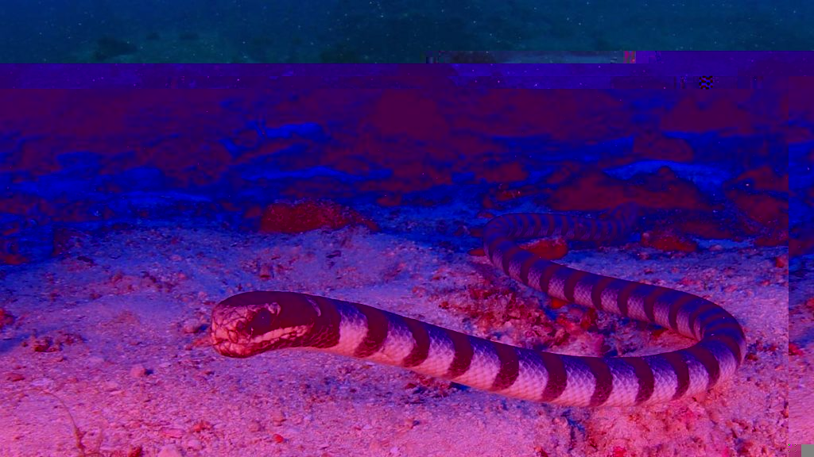
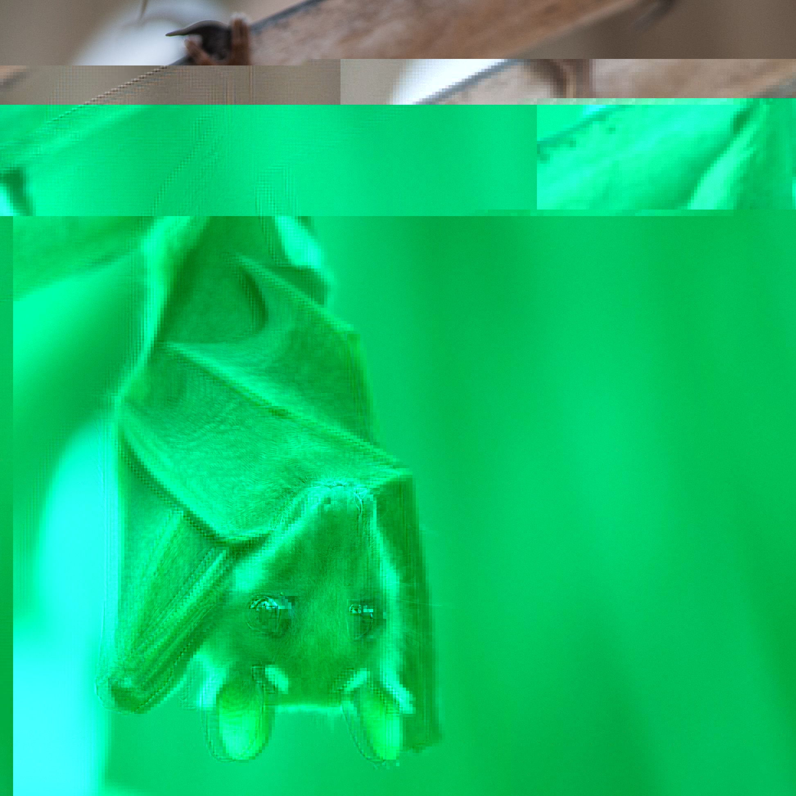

I like animals but from a distance. Some of my favorite ones are shown here. A lot of them are endangered due to the effects of global warming and human activity, and I would hate it if they went extinct. Also, climate change is real.